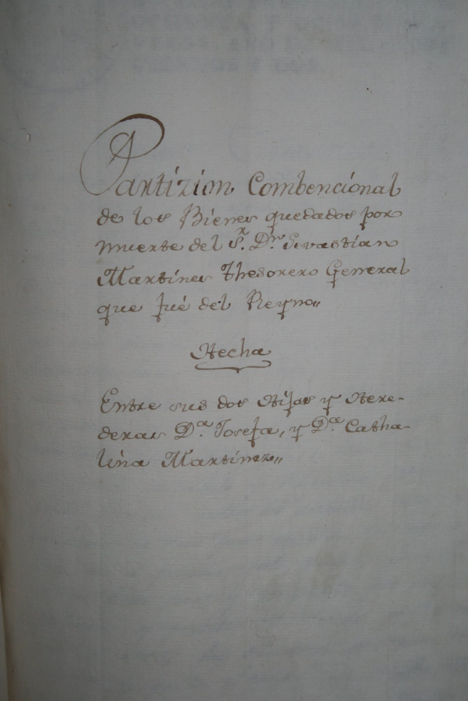
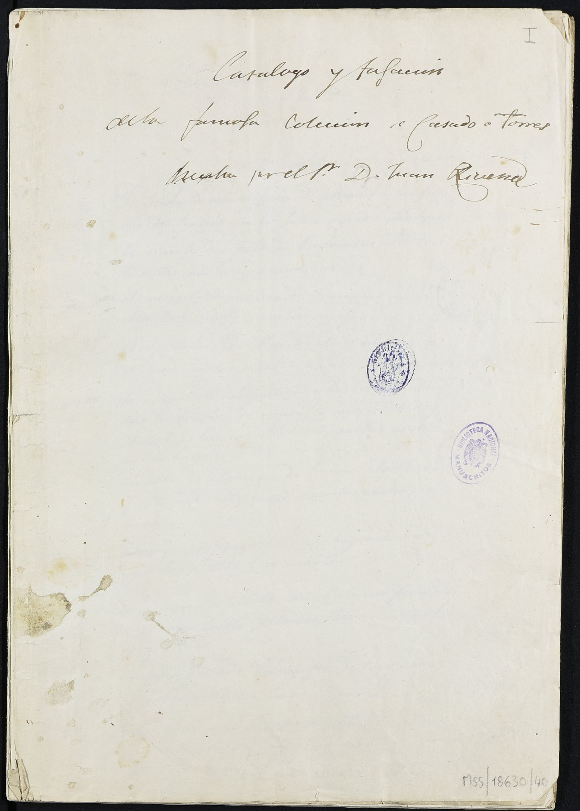
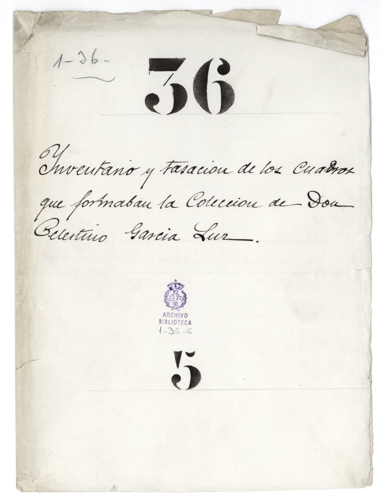
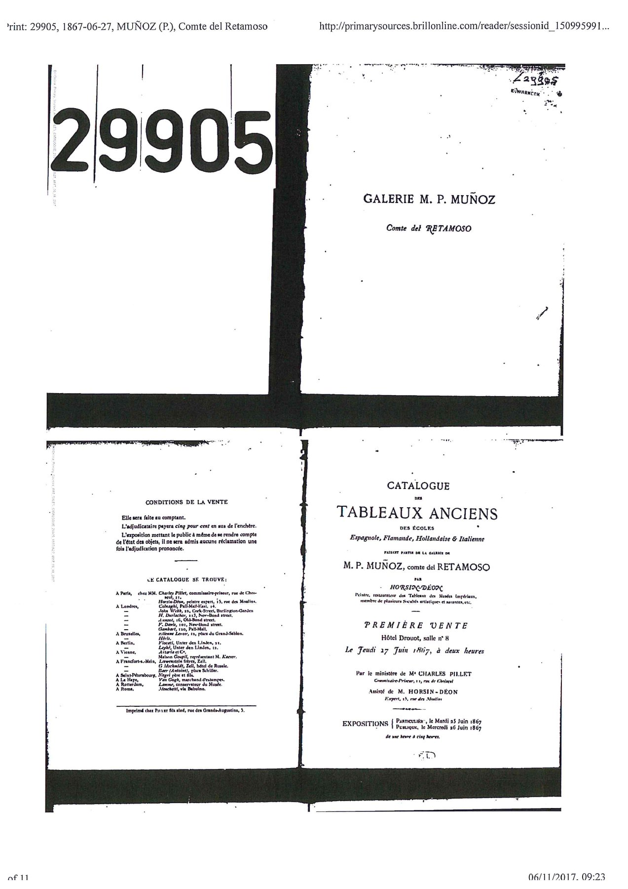
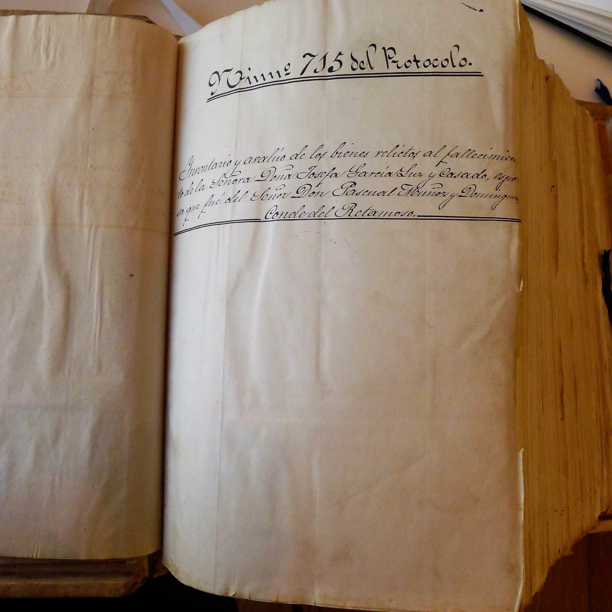
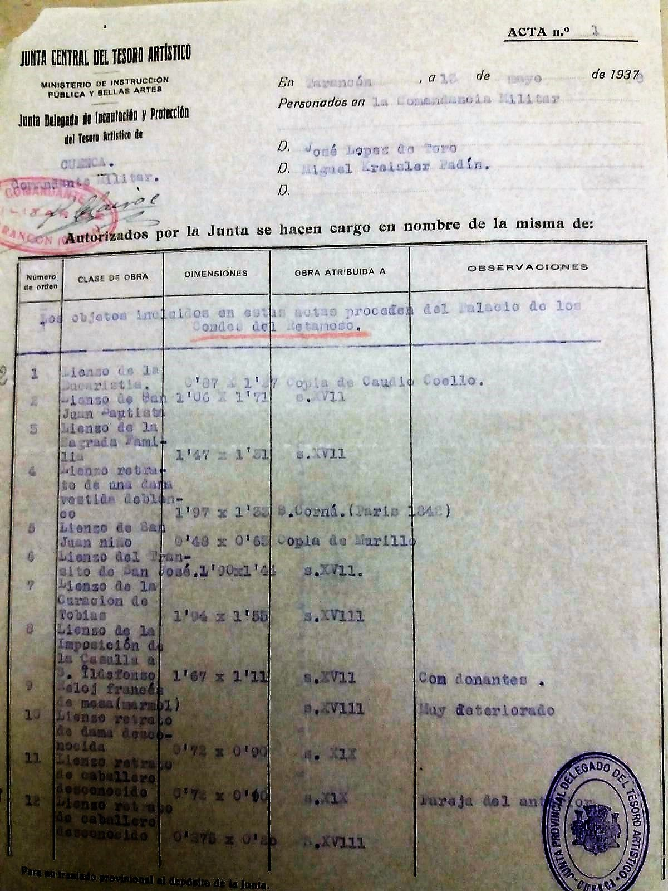
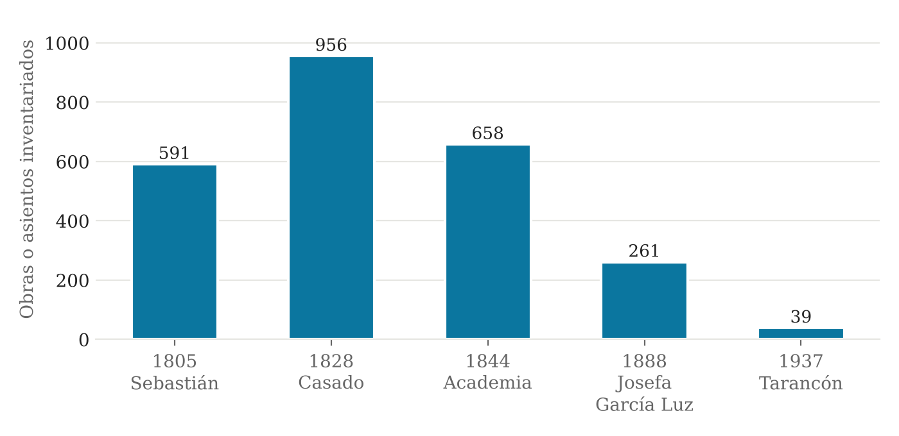
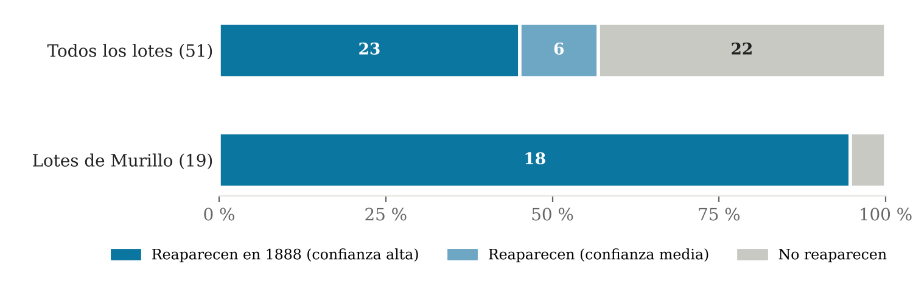
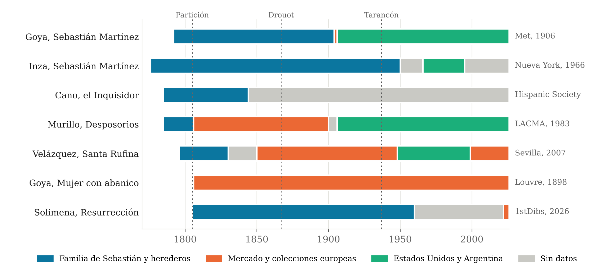

De Cádiz a Nueva York · Materiales
Cómo seguimos los cuadros de Sebastián Martínez a través de los testamentos, particiones y actas de sus herederos.
Lesley Crewdson y José Juan Ruiz · Universidad de Cádiz y Archivo Histórico de Protocolos de Cádiz · 18 de noviembre de 2026
El problema
Entre la partición de 1805 y el acta de Tarancón de 1937 la colección se describe siete veces, por escribanos, tasadores, académicos, subastadores y miembros de una junta en plena guerra. Ninguno vio el inventario anterior.
Las descripciones son escuetas («un santo», «un retrato»), las atribuciones cambian, las medidas se dan en varas, tercias o metros y las tasaciones en reales, francos o pesetas.
Cómo los encadenamos
1805 · Cádiz

«Partición convencional de los bienes quedados por muerte del Sr. D. Sebastián Martínez, Thesorero General que fue del Reyno, hecha entre sus dos hijas y herederas D.ª Josefa y D.ª Catalina Martínez», portada. Archivo Histórico de Protocolos de Cádiz.
Cinco años después de la muerte de Sebastián, sus dos hijas se reparten la pinacoteca en lotes de valor equivalente. Josefa, casada con Fernando Casado de Torres, y Catalina, casada con Francisco Viola.
1828 · Madrid

Inventario de la pinacoteca de Fernando Casado de Torres.
El marino e ingeniero recompone la colección. Recupera buena parte de lo que había recibido Catalina y la amplía hasta casi mil obras.
1844-1849 · Madrid

«Inventario y tasación de los cuadros que formaban la colección de don Celestino García Luz», carpetilla. Real Academia de Bellas Artes de San Fernando, Archivo, sign. 1-36-6.
Celestino García Luz, yerno de Casado, ofrece la colección a la Corona en 1844, 1847 y 1849. La Academia de San Fernando la tasa. La reina no compra.
27 de junio de 1867 · París

Catálogo de la venta de la galería de M. P. Muñoz, conde del Retamoso, Hôtel Drouot, 27 de junio de 1867, con anotaciones de precios a mano. Lugt 29905 (Brill, Art Sales Catalogues Online).
El mismo año en que el marqués de Salamanca vende su galería en París, los herederos lo intentan con 51 lotes. El resultado es pobre.
1885-1888 · Madrid

Testamentaría de Josefa García-Luz Casado. Archivo Histórico de Protocolos de Madrid, t. 28102.
Muere Josefa en 1885 y la partición se cierra en 1888. Es el inventario que deja ver lo que no se vendió en París, y en él aparece el Goya de Sebastián, tasado en 375 pesetas.
13 de mayo de 1937 · Tarancón

Actas 1 a 4 de la Junta Delegada de Cuenca y acta del Parque de Automóviles, 13-V-1937.
Diez meses después del asesinato de la condesa viuda del Retamoso, la Junta registra lo que queda en el palacio de Tarancón. Entre los cuadros, el retrato de Sebastián por Inza, «rasgado en el centro».
Las siete instantáneas

Obras o asientos inventariados. En 1805 y 1888 se cuentan asientos, y un asiento puede agrupar varios cuadros. El avalúo de 1844 cubre la colección de Celestino García Luz.
Resultado 1
Según la tradición familiar, Catalina vendió a los ingleses la mitad de su herencia. Los inventarios no lo sostienen.
0,84
de los lotes de Catalina sobreviven en 1828, comparados con los de Josefa
0,67
del valor sobrevive. Las pérdidas se concentran en Cádiz y en los cuadros más caros
Hubo ventas selectivas de obras pequeñas y valiosas a oficiales británicos, no la mitad de la herencia. Lo mejor de la parte de Catalina lo recompraron Josefa y Fernando, empezando por el retrato de Goya.
Resultado 2
De las 132 obras de los catálogos de Richard W. Meade (1831 y 1853), solo una procede con alta probabilidad de la hijuela de Catalina: un San Pedro liberado de la cárcel atribuido a Caravaggio, tasado en 150 reales en 1805.
Otras diez son posibles. El grueso de la colección de Meade no aparece en ninguna hijuela.
Resultado 3
Al menos 23 de los 51 lotes de Drouot, y 18 de los 19 Murillos, vuelven a aparecer en la partición de 1888.

Cruce del catálogo de Drouot (1867) con la partición de 1888.
Los seis cuadros de la conferencia, y uno más

Azul: familia de Sebastián y herederos. Naranja: mercado y colecciones europeas. Verde: Estados Unidos y Argentina. Gris: sin datos.
Lo que todavía no sabemos
Elaboración propia a partir de las transcripciones de los inventarios. Para estructurar los datos, cruzar los inventarios y preparar estas páginas se ha utilizado Claude (Anthropic), bajo la dirección de los autores. Las ideas centrales, la interpretación y las conclusiones son de los autores. [?] = a verificar.